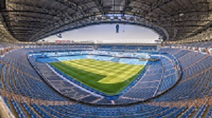
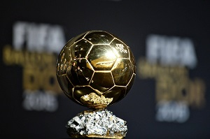

Napjainkban a labdarúgást az egész világon amatőr- és hivatásos szinten űzik. Az emberek milliói mennek ki a stadionokba, hogy figyelemmel kísérjék a kedvenc csapatukat, miközben milliárdok nézik a mérkőzéseket a televízión keresztül. A FIFA 2001-es felmérése szerint több mint 200 országból körülbelül 240 millió ember rendszeresen futballozik. Az egyszerű szabályok és minimális felszerelésigény kétségkívül elősegíti a terjedését és a népszerűségének növekedését.
A játéktér hossza 90–120 méter lehet – két egyenlő méretű térfélre – nemzetközi mérkőzésen ez a méret 100–110 méterre változik. Szélessége 45–90 méter, nemzetközi mérkőzésen 64–75 méter. A népszerűen 16-osnak nevezett büntető területnek 16,5 méterre kell lennie az alapvonaltól és a gólvonaltól – ez a kettő egybeesik –, a büntetőpontnak pedig 11 méterre. 9,15 méter a sugara a kezdőkörnek és a 16-os előtti félkörnek. A kapu előtti tér a gólvonaltól 5,5 méterre végződik. Az alapvonalat, az oldalvonalat, a gólvonalat, a kezdőkört, a 16-os előtti körszeletet, az „öt és felest”, valamint a büntetőpontot fehér mészporral jelölik meg.
Számos stadiont eleve csak futballra szánnak, így ezeknél rögtön a játéktér széle után kezdődik a nézőtér. A játékterek nagy része körül azonban ma is van futópálya.Azokban a stadionokban, ahol nemzetközi mérkőzéseket játszanak, kötelező a világítás. A hazai NB. I.-es bajnokságban csak olyan stadionban lehet mérkőzést játszani, amelyik rendelkezik megfelelő világítással.
Egy csapatból legfeljebb tizenegy játékos lehet egyszerre a játéktéren: egy kapus és 10 mezőnyjátékos. Rossz csere esetén – ha többen vannak, mint tizenegyen az egyik csapatban – sárga kártyás figyelmeztetéssel sújtható a vétkező csapat. Hét játékosnál kevesebb egyik csapatban sem lehet a játéktéren. Tehát, ha sérülések, vagy kiállítások miatt az egyik csapatból öt játékos hiányzik, a találkozót le kell fújni. Egy meccs viszont elvileg elkezdhető akkor is, ha valamelyik csapat nem tud játékba küldeni 11 játékost, gyakorlatilag azonban erre csak alacsonyabb osztályokban van példa.
A Ballon d’Or, vagyis az Aranylabda az európai labdarúgás egyéni trófeája, melyet a legjobb teljesítményt nyújtó labdarúgó kaphat meg. A díjat 1956-ban alapította a francia labdarúgó szaklap, a France Football Gabriel Hanot, Jacques Ferran, Jacques Goddet és Jacques de Ryswick újságírók kezdeményezése alapján. A választás szabályai az idők folyamán változtak, 1995 óta az Európában játszó labdarúgók is megkaphatják, vagyis nem számít, hogy milyen nemzetiségűek, csak európai csapatnál legyenek leigazolva, 2007-ben pedig kiterjesztették valamennyi labdarúgóra. Régebben az európai szövetség (UEFA) tagállamainak egy-egy szakújságírója szavazhatott a legjobbakra, 2007 után azonban 96-ra nőtt a zsűri tagjainak száma. 2010-ben a díjat összevonták a FIFA év játékosa díjjal. 2016. szeptember 16-án bejelentették, hogy a France Football ismét önállóan adja át a díjat, valamint, hogy még az év vége előtt ismertetik a győztes kilétét az elmúlt évek gyakorlatától eltérően, a győztesekre pedig ismét csak az európai újságírók szavazhatnak.
